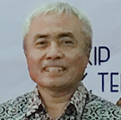

Mengapa harus
melalui LSP?
Kami menjaga kepercayaan client terhadap lembaga ini dengan memberikan pelayanan terhadap client berdasarkan sistem mutu yang berkualitas serta terpercaya dengan mengedepankan aturan dan acuan normatif yang berlaku.
Prof. Dr. Ir. H. Eddy Yusuf, SP., M.Si., M.Kom.
Rektor Universitas Pasundan
nice

Ir. H. Erwin Maulana Pribadi, MT., IPM.
Direktur LSP P1 Universitas Pasundan
slash
Ir. H. Reksi Agusjaya
Alumni PT. Dirgantara Indonesia
good
Ir. Sudarsono, MT.
Alumni PT. Pindad (Persero)
test